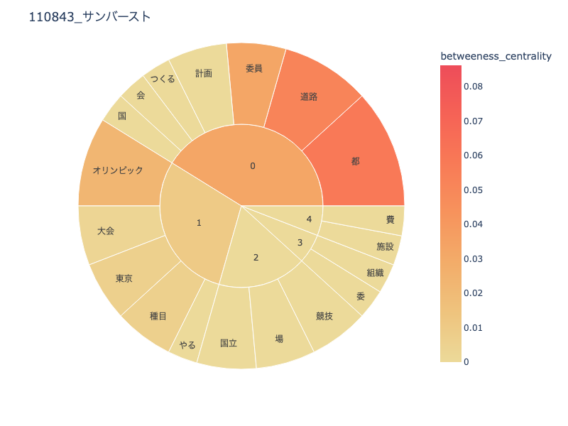
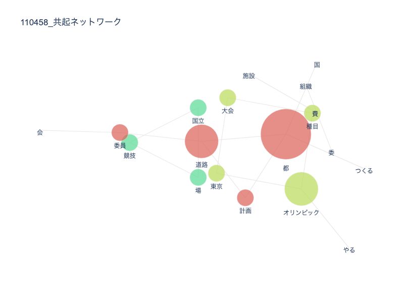
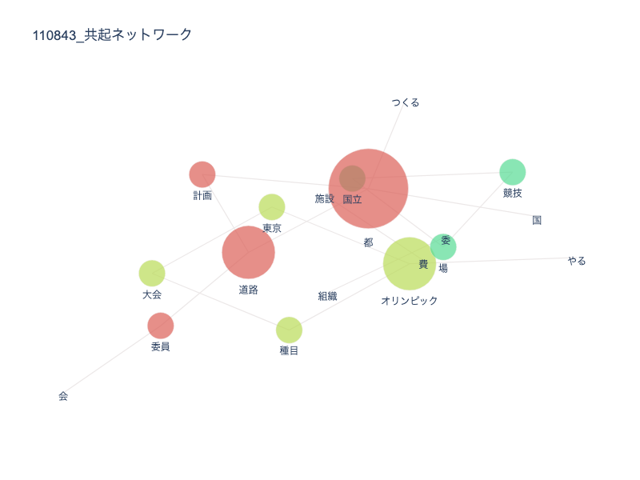
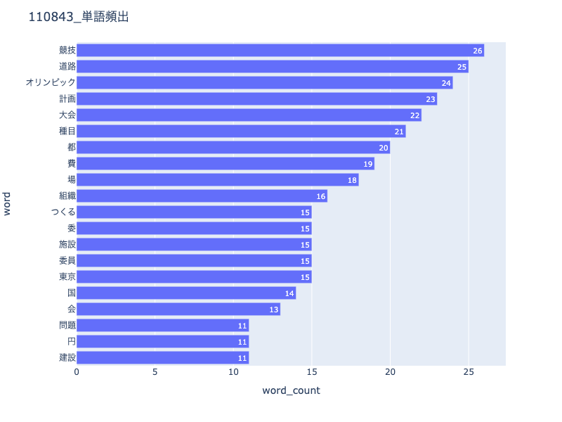

サンバースト比較

2020年大会 1964年大会
共起ネットワーク比較
 
2020年大会 1964年大会
頻出単語比較

2020年大会 1964年大会
比較
サンバーストと頻出単語を比較してみてみると変化がないことがわかる
両方の大会で委員会や道路、東京都が多く新聞に掲載されていることがわかる
変化が見られるのは共起ネットワークで、64大会では競技と委員会は近い関係にはなかったが、20年大会になるととても親密になっている
共起ネットワークで両方の大会で都と道路は大きく表示されている